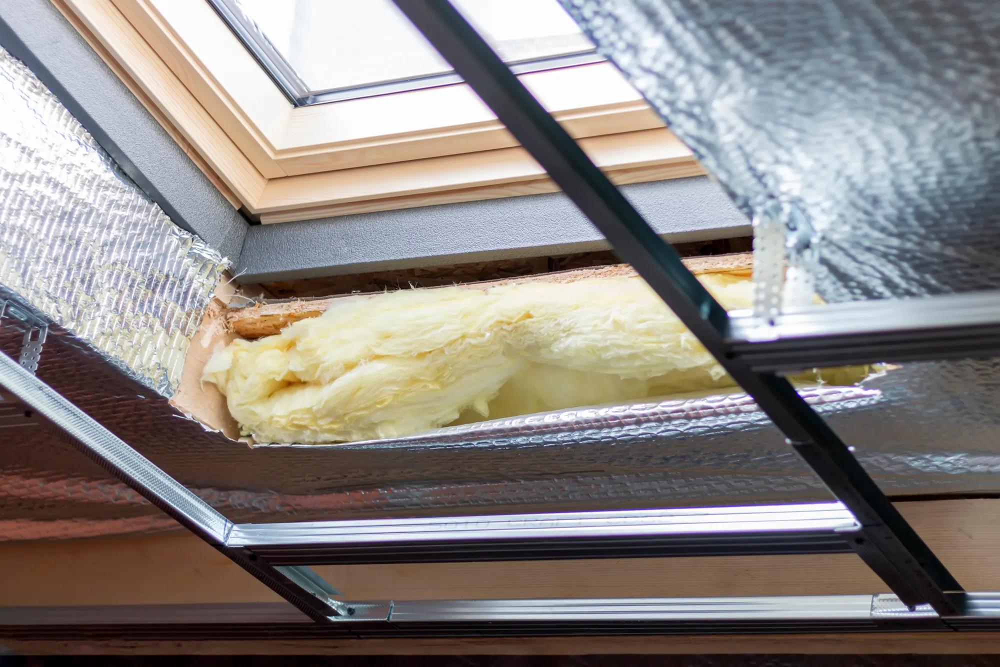

Isolation thermique et phonique à Paris
Plus chaud l’hiver, plus frais l’été, plus calme toute l’année. Une bonne isolation change votre façon de vivre chez vous.
Bruits de voisinage, murs froids, chaleur sous les toits : les appartements parisiens ont leurs défis. Nous isolons murs, plafonds et combles avec des solutions performantes et discrètes, qui préservent vos volumes et l’esthétique de vos pièces.
